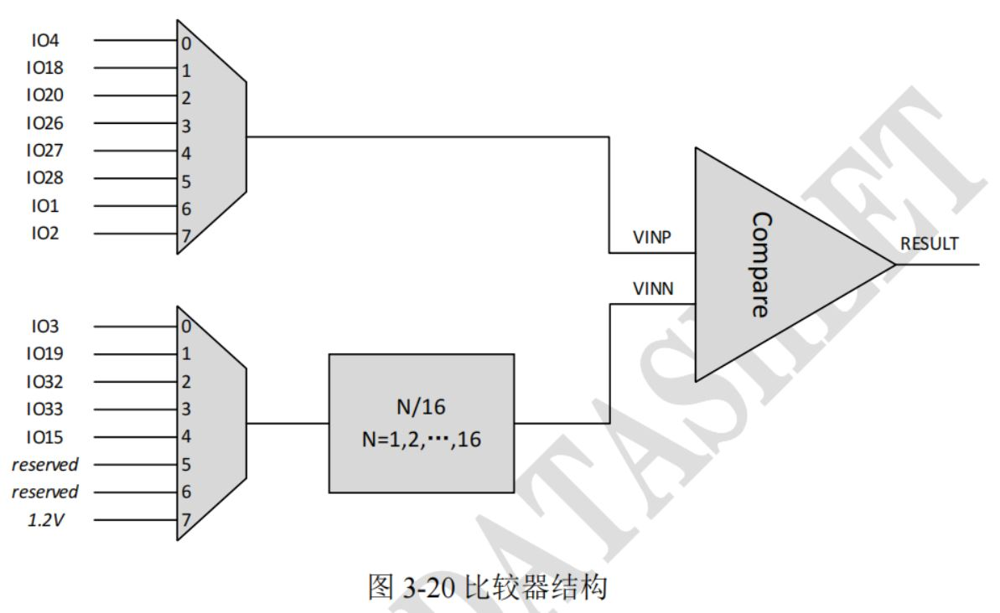

4 模拟比较器（COMPARATOR）
4.1 功能概述
模拟比较器根据比较两个输入电压的结果以获得高电平或低电平输出。
特性：
- 支持轨到轨输入。
- 4种功耗模式：超低功耗模式、低功耗模式、中等功耗模式、高功耗模式。
- 精确处理低至20mV电压。
- 支持8通道VINP和6通道VINN，VINN其中一个通道来自内部参考电压。
- VINN支持16级阶梯。
4.2 使用说明

4.2.1 模拟比较器模块初始化
typedef struct {
COMPARATOR_Vinp_t v_in_p;
COMPARATOR_Vinn_t v_in_n;
COMPARATOR_Enable_t en;
COMPARATOR_HysteresisValtage_t hysteresis;
COMPARATOR_VinnDivision_t vinn_division;
COMPARATOR_WorkMode_t work_mode;
COMPARATOR_OutputPolarity_t output_polarity;
} COMPARATOR_SetStateStruct;/**
* @brief Initialize comparator module
*
* @param[in] cmp_set Initial parameter struct
*/
void COMPARATOR_Initialize(const COMPARATOR_SetStateStruct* cmp_set);4.2.2 获取模拟比较器结果
模拟比较器模块输出结果的极性可以配置。
如果output_polarity配置为0，如果VINP电压高于VINN，比较器返回的结果是1；如果VINP电压低于VINN，比较器返回的结果是0。
如果output_polarity配置为1，如果VINP电压高于VINN，比较器返回的结果是0；如果VINP电压低于VINN，比较器返回的结果是1。
/**
* @brief Get comparator result
*
* @return comparator result
*/
uint8_t COMPARATOR_GetComparatorResult(void);4.2.3 设置模拟比较器触发中断
模拟比较器模块有2个中断源，输出结果的上升沿中断和输出结果的下降沿中断，中断标志需要手动清除。
如果使能了模拟比较器模块的上升沿中断，当输出结果从0变为1时，会触发POSEDGE中断。
如果使能了模拟比较器模块的下降沿中断，当输出结果从1变为0时，会触发NEGEDGE中断。
上升沿或者下降沿触发中断可以单独配置，也可配成双沿触发。
typedef enum
{
COMPARATOR_DISABLE_INT_MODE = 0,
COMPARATOR_NEGEDGE_INT_MODE ,
COMPARATOR_POSEDGE_INT_MODE ,
COMPARATOR_POSEDGE_AND_NEGEDGE_INT_MODE ,
} COMPARATOR_INTERRUPT_MODE_t;
/**
* @brief Set comparator as interrupt source
*
* @param[in] int_mode COMPARATOR_INTERRUPT_MODE_t
* @return 0:OK, other:error
*/
int COMPARATOR_SetInterrupt(COMPARATOR_INTERRUPT_MODE_t int_mode);
/**
* @brief Get comparator interrupt status and clear interrupt flag
*
* @return interrupt status
*/
COMPARATOR_INTERRUPT_MODE_t COMPARATOR_GetIntStatusAndClear(void);4.2.4 设置模拟比较器睡眠唤醒
模拟比较器模块可以作为唤醒源唤醒睡眠中的芯片。
根据模拟比较器模块输出结果的电平状态，可以配置成高电平或者低电平唤醒芯片；也可配置成边沿唤醒，上升沿、下降沿、双沿唤醒均可。
typedef enum
{
COMPARATOR_HIGH_LEVEL_WAKEUP = 0,
COMPARATOR_LOW_LEVEL_WAKEUP ,
} COMPARATOR_LEVEL_WAKEUP_t;
typedef enum
{
COMPARATOR_LEVEL_WAKEUP_MODE = 0,
COMPARATOR_POSEDGE_WAKEUP_MODE ,
COMPARATOR_NEGEDGE_WAKEUP_MODE ,
COMPARATOR_POSEDGE_AND_NEGEDGE_WAKEUP_MODE ,
} COMPARATOR_WAKEUP_MODE_t;
/**
* @brief Set comparator as wakeup source from DEEP SLEEP mode
*
* @param[in] enable 0:disable, 1:enable
* @param[in] level COMPARATOR_LEVEL_WAKEUP_t
* @param[in] wakeup_mode COMPARATOR_WAKEUP_MODE_t
* @return 0:OK, other:error
*/
int COMPARATOR_SetDeepSleepWakeupSource(uint8_t enable,
COMPARATOR_LEVEL_WAKEUP_t level,
COMPARATOR_WAKEUP_MODE_t wakeup_mode);4.3 应用举例：
4.3.1 初始化模拟比较器模块
模拟比较器模块的初始化配置如cmp_set，GPIO18作为VINP，GPIO19作为VINN，30mV的迟滞，VINN没有分压（配置为16/16），超低功耗模式，输出极性配置为0（如果VINP电压高于VINN，比较器返回的结果是1）。
例子中模拟比较器模块使能了上升沿中断，使能了上升沿睡眠唤醒。
static uint32_t lpc_pos_cb_isr(void *user_data)
{
COMPARATOR_INTERRUPT_MODE_t status = COMPARATOR_GetIntStatusAndClear();
printf("pos isr status %d %d\r\n", status, COMPARATOR_GetComparatorResult());
return 0;
}
static uint32_t lpc_neg_cb_isr(void *user_data)
{
COMPARATOR_INTERRUPT_MODE_t status = COMPARATOR_GetIntStatusAndClear();
printf("neg isr status %d %d\r\n", status, COMPARATOR_GetComparatorResult());
return 0;
}
static COMPARATOR_SetStateStruct cmp_set = {
.v_in_p = COMPARATOR_VINP1_GPIO18,
.v_in_n = COMPARATOR_VINN1_GPIO19,
.en = COMPARATOR_ENABLE,
.hysteresis = COMPARATOR_30mV_HYSTERRESIS,
.vinn_division = COMPARATOR_16_16,
.work_mode = COMPARATOR_ULTRA_LOW_POWER,
.output_polarity = COMPARATOR_OUT1_P_GREATE_N,
};
static void setup_peripherals_comparator(void)
{
SYSCTRL_ClearClkGateMulti(1 << SYSCTRL_ITEM_APB_SysCtrl);
SYSCTRL_ClearClkGateMulti(1 << SYSCTRL_ITEM_APB_PinCtrl);
SYSCTRL_ClearClkGateMulti(1 << SYSCTRL_ITEM_APB_GPIO0);
SYSCTRL_ClearClkGateMulti(1 << SYSCTRL_ITEM_APB_GPIO1);
SYSCTRL_ClearClkGateMulti(1 << SYSCTRL_ITEM_APB_LPC);
COMPARATOR_Initialize(&cmp_set);
platform_set_irq_callback(PLATFORM_CB_IRQ_LPC_POS, lpc_pos_cb_isr, 0);
platform_set_irq_callback(PLATFORM_CB_IRQ_LPC_NEG, lpc_neg_cb_isr, 0);
COMPARATOR_SetInterrupt(COMPARATOR_POSEDGE_INT_MODE);
COMPARATOR_SetDeepSleepWakeupSource(1, COMPARATOR_HIGH_LEVEL_WAKEUP, COMPARATOR_POSEDGE_WAKEUP_MODE);
return;
}